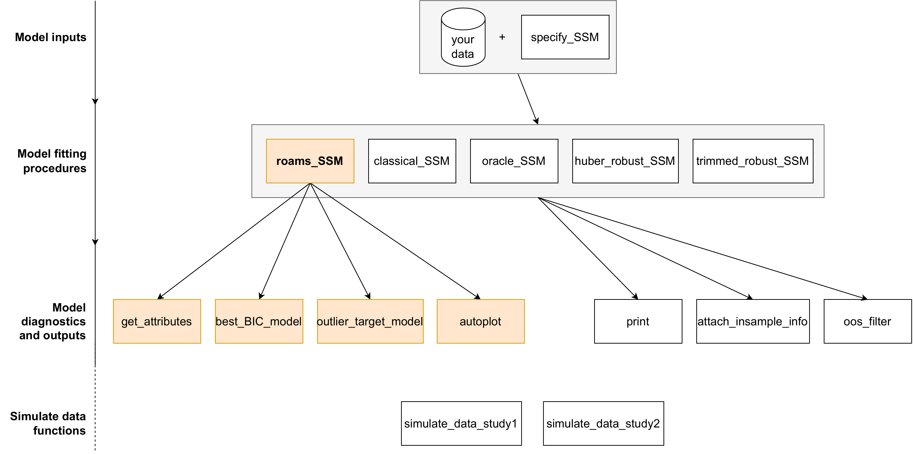
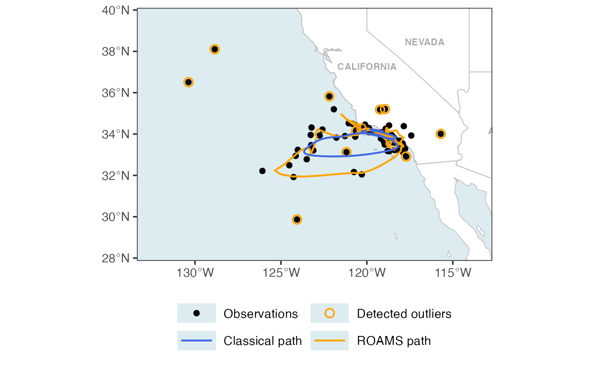
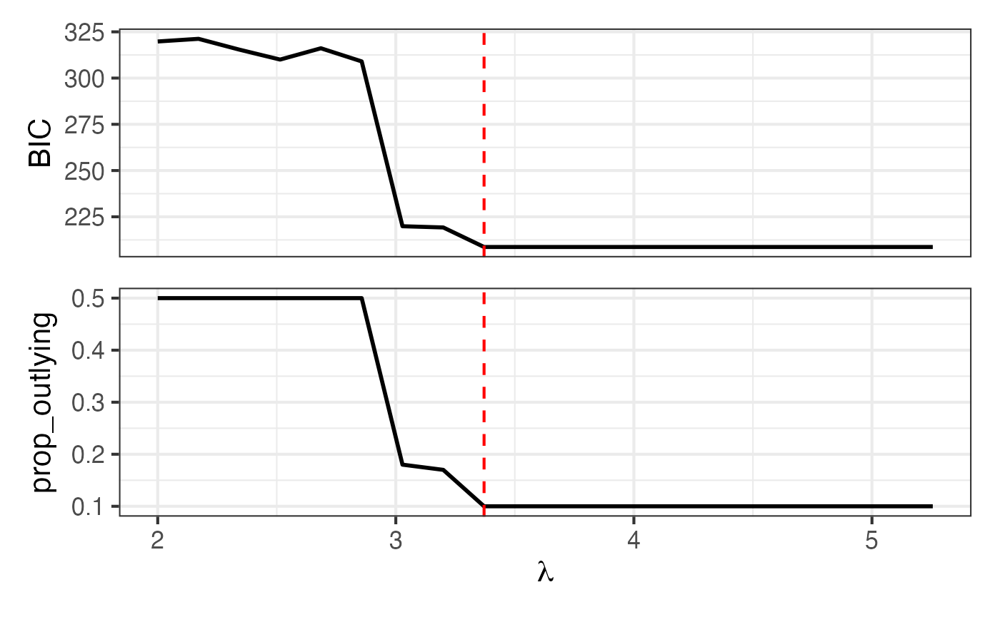
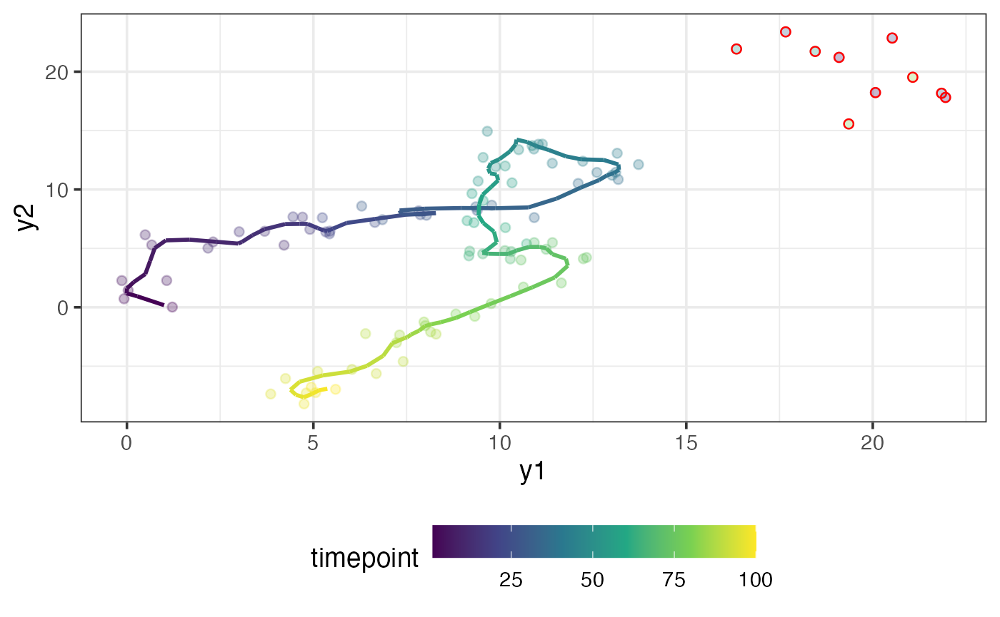
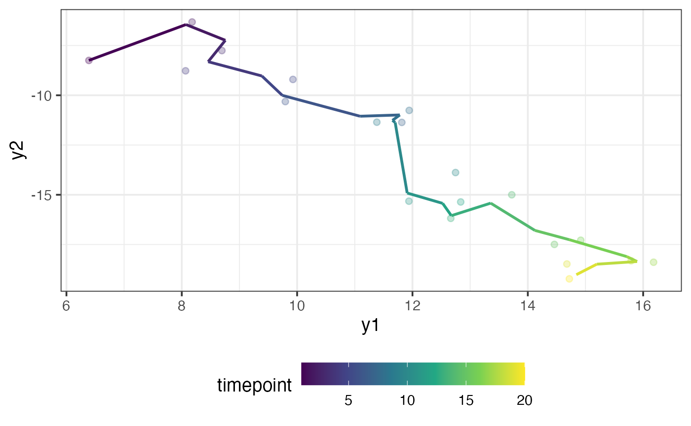
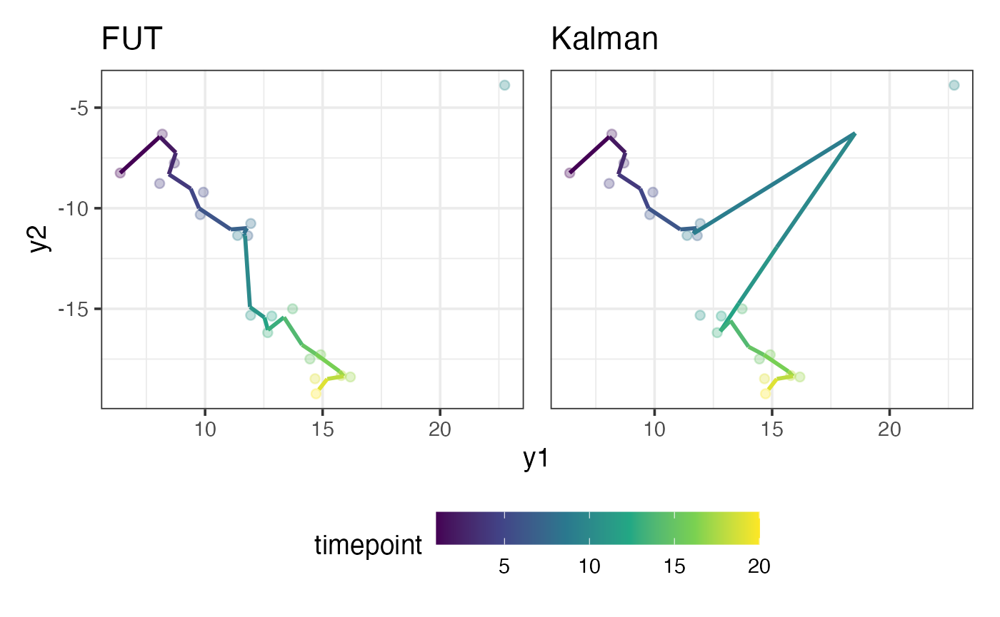

In this vignette, we provide a summary of the main R functions
contained in the roams package and how to use them. We’ll
begin by simulating a data set, fitting a model, inspecting results, and
finally using the model to perform out-of-sample (OOS) filtering.

Overview of roams functions
We start by loading the required packages and setting a simple ggplot2 theme for consistent plotting.
library(roams)
library(tidyverse)
library(patchwork)
theme_set(
theme_bw(base_size = 14) +
theme(legend.position = "bottom",
legend.key.width = unit(1.2, "cm"))
)Simulating data
roams provides a helper function
simulate_data_study1() which generates example data sets
used in the simulations results of Study 1 in Shankar et al. (2025). We use this function to
simulate a single sample (samples = 1) for each of the
different sample sizes and outlier settings, and extract specifically
the cluster setting with
timepoints.
data = simulate_data_study1(samples = 1, seed = 12345) |>
filter(n == 100, setting == "cluster")The data set contains a column y which contains an
observation in each row:
y = data$y[[1]]
head(y)
#> [,1] [,2]
#> [1,] 1.21665121 0.01718996
#> [2,] 0.03387945 1.43366185
#> [3,] -0.07748398 0.72068394
#> [4,] 20.07176363 18.22658579
#> [5,] -0.13745034 2.26740843
#> [6,] 1.06648254 2.27373266As you can see, the observations are 2-dimensional. You can think of each observation as a longitude/latitude coordinate of an object moving through 2D space. We can plot these observations indexed by time:
plot_data = tibble(
y1 = y[,1],
y2 = y[,2],
timepoint = 1:100
)
ggplot(plot_data) +
aes(x = y1, y = y2, colour = timepoint) +
geom_point() +
scale_colour_viridis_c()
The object first starts near the coordinate , then it moves in the positive direction, and then it loops around before moving back in the the negative direction. In the top right, there are a few observations scattered away from the main trajectory taken by the object. We suspect that these points are outliers.
Fitting a ROAMS state-space model
Here are the state and observation equations for a linear Gaussian state-space model:
where is the observation process, is the state process, and . The state-space model we want to use to model our data is the first-differenced correlated random walk (DCRW) model. The DCRW model has a 2-dimensional and a 4-dimensional because tries to capture the true location of the object at times and (see Shankar et al. (2025) for more details). The matrices in the DCRW model are given by
and the error variance matrices are and . We assume at time , that , where and .
There are a total of 5 unknown parameters in the DCRW model:
.
To specify this model, we define a function build_fn() that
takes in
as an argument and returns
.
The helper function specify_SSM() is used inside
build_fn() to help return these values in the correct
format.
build_fn = function(par) {
phi_coef = par[1]
Phi = diag(c(1+phi_coef, 1+phi_coef, 0, 0))
Phi[1,3] = -phi_coef
Phi[2,4] = -phi_coef
Phi[3,1] = 1
Phi[4,2] = 1
A = diag(4)[1:2,]
Sigma_w = diag(c(par[2], par[3], 0, 0))
Sigma_v = diag(c(par[4], par[5]))
mu0 = c(0,0,0,0)
P0 = diag(rep(10^2, 4))
specify_SSM(
state_transition_matrix = Phi,
state_noise_var = Sigma_w,
observation_matrix = A,
observation_noise_var = Sigma_v,
init_state_mean = mu0,
init_state_var = P0)
}To fit the model using the ROAMS procedure, we use the function
roams_SSM() and pass in the observations y as
well as our model specification function build_fn(). Since
and
,
we add in these parameter box constraints via the lower and
upper arguments. We provide initial parameter values
and we set num_lambdas = 20 to let roams_SSM()
automatically select a sequence of 20
values to fit candidate models.
model_list = roams_SSM(
y = y,
init_par = c(0.5, rep(1, 4)),
build = build_fn,
num_lambdas = 20,
lower = c(0, rep(1e-12, 4)),
upper = c(1, rep(Inf, 4))
)
model_list
#> ROAMS SSM List with 20 models
#> * Use best_BIC_model() or outlier_target_model() to extract a preferred model.
#> - Or, simply use list indexing such as [[1]] to extract a single model.
#> * Use autoplot() to visualize the models.
#> * Use get_attribute() to extract attributes from the models.Inspecting the models
Once the models have been fit and assigned to the variable
model_list, we can plot BIC and proportion-outlying curves
across the values of
using the autoplot() function:
autoplot(model_list)
The exact BIC or proportion-outlying values can be obtained using the
get_attribute() function:
get_attribute(model_list, "prop_outlying")
#> [1] 0.50 0.50 0.50 0.50 0.50 0.50 0.18 0.17 0.10 0.10 0.10 0.10 0.10 0.10 0.10
#> [16] 0.10 0.10 0.10 0.10 0.10To extract the model corresponding to the lowest BIC, we can use the
best_BIC_model() function. We assign this model to the
variable final_model:
final_model = best_BIC_model(model_list)
final_model
#> ROAMS SSM Model
#> * Lambda: 3.371
#> * Outliers Detected: 10%
#> * BIC: 208.663
#> * Log-Likelihood: -81.306
#> * Iterations: 6
#> Use $ to see more attributes.As shown above, printing final_model provides a brief
summary of the model. It tells us which
value was selected, the proportion of timepoints detected as outlying,
the BIC, log-likelihood, and the number of ROAMS iterations.
Other model-specific attributes such as par (parameter
estimates) can be viewed using $:
final_model$par
#> [1] 0.5522448 0.1655666 0.2131430 0.3093632 0.2475860By default, more detailed information such as estimates for the
hidden states are not included in the model object to save memory.
However, we need this information to plot the estimated states. To get
this information, we can use the attach_insample_info()
function:
final_model = attach_insample_info(final_model)Below, we use our final_model to plot the `smoothed’
estimated trajectory of the moving object as well as circle the
observations detected as outliers in red.
outliers = rowSums(abs(final_model$gamma)) != 0
plot_data = tibble(
y1 = y[,1],
y2 = y[,2],
y1_model = final_model$smoothed_observations[,1],
y2_model = final_model$smoothed_observations[,2],
outliers = outliers,
timepoint = 1:100
)
ggplot(plot_data) +
aes(x = y1, y = y2, colour = timepoint) +
geom_point(alpha = 0.3) +
geom_path(aes(x = y1_model, y = y2_model),
linewidth = 1) +
geom_point(data = plot_data |> filter(outliers),
colour = "red", pch = 1) +
scale_colour_viridis_c()
The fit looks good and the suspected outliers have been correctly detected.
Out-of-sample (OOS) filtering
The simulated data set that we generated contains another column
named y_oos, which contains
out-of-sample observations. We will use our final_model to
obtain filtered values for y_oos.
The out-of-sample data has the same characteristics as the in-sample
data, except that it starts where the in-sample data ends. We re-define
our build_fn() to set the initial state mean
to be our best guess of the hidden state at the last in-sample
timepoint,
:
final_model$smoothed_states[100,]
#> [1] 5.374293 -6.914360 5.149415 -7.047400
y_oos = data$y_oos[[1]]
build_fn_oos = function(par) {
phi_coef = par[1]
Phi = diag(c(1+phi_coef, 1+phi_coef, 0, 0))
Phi[1,3] = -phi_coef
Phi[2,4] = -phi_coef
Phi[3,1] = 1
Phi[4,2] = 1
A = diag(4)[1:2,]
Sigma_w = diag(c(par[2], par[3], 0, 0))
Sigma_v = diag(c(par[4], par[5]))
mu0 = final_model$smoothed_states[100,]
P0 = diag(rep(10^2, 4))
specify_SSM(
state_transition_matrix = Phi,
state_noise_var = Sigma_w,
observation_matrix = A,
observation_noise_var = Sigma_v,
init_state_mean = mu0,
init_state_var = P0)
}Using this new state-space model specification,
build_fn_oos, we can do out-of-sample filtering using the
oos_filter() function. We supply data y_oos,
the model final_model (which is needed for its parameter
estimates), and our function build_fn_oos:
result = oos_filter(y_oos, final_model, build_fn_oos)
head(result$filtered_observations)
#> [,1] [,2]
#> [1,] 6.388546 -8.246328
#> [2,] 8.072338 -6.445772
#> [3,] 8.755492 -7.236791
#> [4,] 8.457210 -8.312808
#> [5,] 9.388451 -9.028853
#> [6,] 9.743224 -10.004715Below, we plot the out-of-sample observations alongside our filtered values. The fit is pretty good:
plot_data = tibble(
y1 = y_oos[,1],
y2 = y_oos[,2],
y1_filter = result$filtered_observations[,1],
y2_filter = result$filtered_observations[,2],
timepoint = 1:20
)
ggplot(plot_data) +
aes(x = y1, y = y2, colour = timepoint) +
geom_point(alpha = 0.3) +
geom_path(aes(x = y1_filter, y = y2_filter),
linewidth = 1) +
scale_colour_viridis_c()
Notice that there are no visible outliers in the out-of-sample data. Let’s see what happens to our filtered values if there is an outlier. We can contaminate the 10 observation to be outlying:
y_oos[10,] = y_oos[10,] + c(10,10)
y_oos[10,]
#> [1] 22.746904 -3.882899If the model passed to oos_filter() is of class
roams_SSM, then by default the oos_filter()
function uses the fast-updating threshold (FUT) filter (see Shankar et al. (2025)) to do out-of-sample
filtering. The FUT filter provides robustness against out-of-sample
outliers. If the usual Kalman filter is desired, we can set the argument
threshold = Inf. We try both filters:
result_FUT = oos_filter(y_oos, final_model, build_fn_oos)
result_kalman = oos_filter(y_oos, final_model, build_fn_oos, threshold = Inf)Below, we plot the filtered values against the out-of-sample data (where the 10 point has been contaminated) for both filtering methods:
plot_data = tibble(
y1 = y_oos[,1],
y2 = y_oos[,2],
y1_FUT = result_FUT$filtered_observations[,1],
y2_FUT = result_FUT$filtered_observations[,2],
y1_kalman = result_kalman$filtered_observations[,1],
y2_kalman = result_kalman$filtered_observations[,2],
timepoint = 1:20
)
p_FUT = ggplot(plot_data) +
aes(x = y1, y = y2, colour = timepoint) +
geom_point(alpha = 0.3) +
geom_path(aes(x = y1_FUT, y = y2_FUT),
linewidth = 1) +
ggtitle("FUT") +
scale_colour_viridis_c()
p_kalman = ggplot(plot_data) +
aes(x = y1, y = y2, colour = timepoint) +
geom_point(alpha = 0.3) +
geom_path(aes(x = y1_kalman, y = y2_kalman),
linewidth = 1) +
ggtitle("Kalman") +
scale_colour_viridis_c()
p_FUT + p_kalman + plot_layout(guides = "collect", axes = "collect")
As you can see, the FUT filter is able to ignore the outlier whereas the Kalman filter gets pulled towards it.
Summary
In this vignette, we demonstrated the core functionality of the
roams package through a complete end-to-end example. We
began by simulating bivariate time series data using
simulate_data_study1(), then specified a state-space model
(the DCRW model) through the helper function specify_SSM().
Using roams_SSM(), we fitted a sequence of models across
different values of the tuning parameter
and identified the optimal model via the BIC criterion.
We then explored how to inspect fitted models, extract key quantities
(such as parameter estimates and detected outliers), and visualise model
diagnostics using autoplot() and smoothed states using
attach_insample_info().
Finally, we illustrated how to use the fitted model for out-of-sample (OOS) filtering, showing that the fast-updating threshold (FUT) filter can effectively resist the influence of outliers compared to the standard Kalman filter.